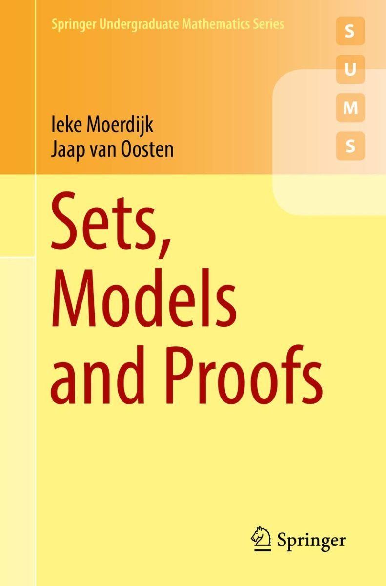

Moerdijk and van Oosten: Sets, Models and Proofs

I quickly become impatient with this really rather odd book. Ieke Moerdijk and Jaap van Oosten’s Sets, Models and Proofs (Springer, 2018) is just 113 pages long, before we get to the Appendix on ‘Topic for Further Study’. You might well predict that, in such a short compass, none of the announced three big topics can possibly be dealt with both accessibly and in enough detail to make a particularly useful text. You’d be right.
Chapter 1 (36 pp.) is titled, simply, ‘Sets’. The aim is “to develop your understanding of sets beyond the use you have made of them in your first years of mathematics.” So we get, in short order, §1 on cardinal numbers and Schröder–Cantor–Bernstein, §2 on the Axiom of Choice, §3 on posets and Zorn’s Lemma and cardinal comparability, §4 on well-ordered sets and transfinite recursion, and §5 on equivalents to Choice. OK, that’s a perfectly sensible menu of topics to offer those who already have a secure grip on e.g. most of the introductory chapter on sets in Munkres’s topology book or the equivalent. But to my mind, the exposition just isn’t that reader-friendly compared with alternatives elsewhere, such as Enderton’s book. Certainly not a top recommendation.
And there is another point. Here’s the offered definition of AC:** The Axiom of Choice is the assertion that for every surjective function \(f \colon X \to Y\) there exists a “section”; that is, a function \(s \colon Y \to X\) such that \(f(s(y)) = y\) for each \(y \in Y\).
You’ll recognize that as the preferred categorial characterisation of choice. And no surprise there: Moerdijk and van Oosten are category theorists. And more generally, their story unfolds not as a about sets but as about sets and the morphisms between them: so functions are served up as sui generis items (and likewise, cardinal numbers in this chapter seem to be treated as sui generic objects, not explicitly identified as themselves sets). Now, in one way I’m all for this. It arguably does go with our “understanding of sets” as actually used in elementary, non-set-theoretical, mathematics (cf. Leinster’s well-known piece on rethinking set theory). However I don’t think it is best policy to proceed this way quite unannounced, in a way which could potentially puzzle the more reflective student who has been told (rightly or wrongly) that functions are sets, or who has met more conventional definitions of AC and wonders why the given one here is chosen.
Chapter 2 (43 pp.) is on ‘Models’. §1 is a preliminary section on the language of ring theory. Then §2 introduces first-order languages, and §3 is on structures for first-order languages and notions of validity and equivalence. §4 gives examples of languages and structures (for graphs, rings, vector spaces, etc.). The authors prefer the approach to semantics of a language L which adds to L a fixed constant for every object in the domain (rather than going via assignments of values to variables, or adding new temporary names for objects as needed); but there’s no discussion of why we need some such approach. Again I can only report that by my lights this basic stuff isn’t done in an especially user-friendly way; I wouldn’t recommend these compressed sections as a starting-point for self-study.
§5 is on compactness. And this is actually quite nicely done. You could give this to a student who has previously met the compactness theorem as an easy corollary of the completeness theorem, (a) to provide revision on some of the elementary implications of compactness, and then (b) to display a purely semantic proof of compactness using ultrafilters.
Following on §6 is on substructures and elementary substructures, §7 is on quantifier elimination, §8 is on the Löwenheim-Skolem theorems, and 9 deals with categorical theories. All good topics — but in just 17 pages? These sections could provide useful revision material, I guess, but are again surely not the place to start. Still, Chapter 2 §§5–8 is the best bit of the book.
Chapter 3 (22 pp.) discusses ‘Proofs’. §1 presents one sort of natural deduction system in a pretty unnatural and distinctly unfriendly way: pretty hopeless as a first introduction, say I. §2 is an over-dense treatment of soundness and completeness (a student could easily go away with the false impression that Zorn’s Lemma is needed for any completeness theorem, and so be puzzled why it doesn’t get mentioned in some versions of completeness theorems) . §3 is on Skolem functions. There are dozens of better alternatives.
So let’s move on to Chapter 4 (11 pp.) on ‘Sets again’. §1 dumps the axioms of ZFC on the reader in a take-it or leave-it spirit. §2 tells us at speed about ordinals and cardinals. §3 starts “The real numbers are constructed as follows”. And yes, all this is supposed to be wrapped up in just eleven pages. Really? Does it usefully work? What’s your guess?
As I said, a rather odd book.